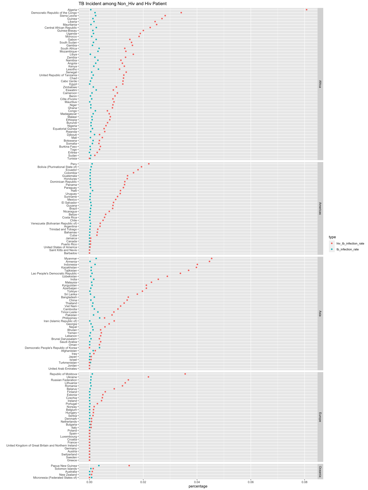
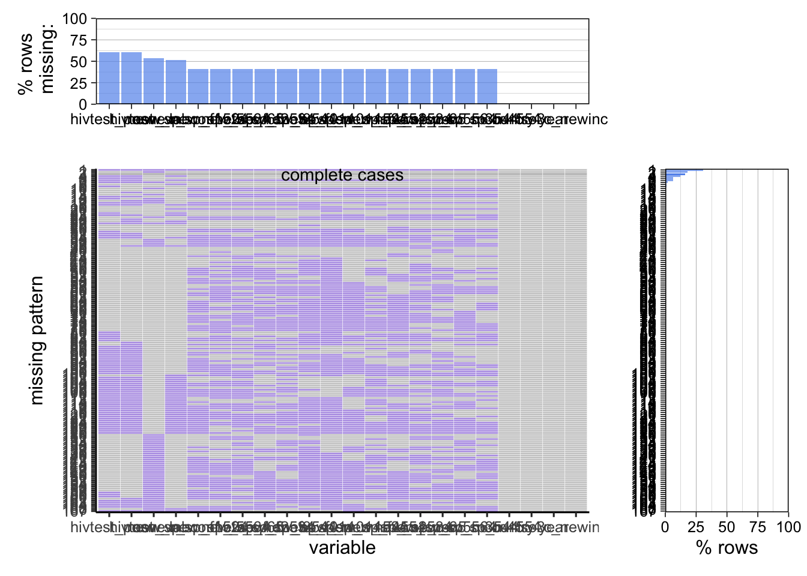
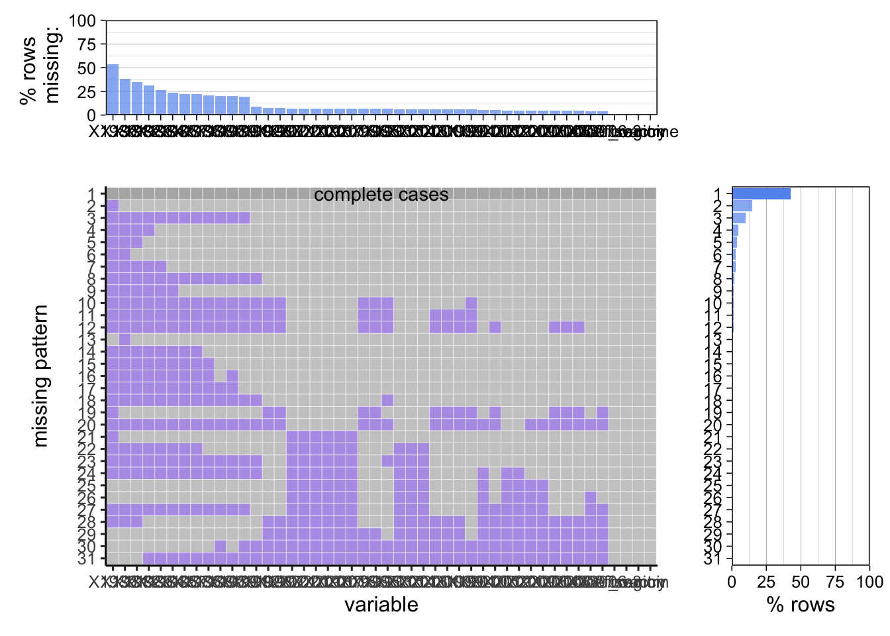
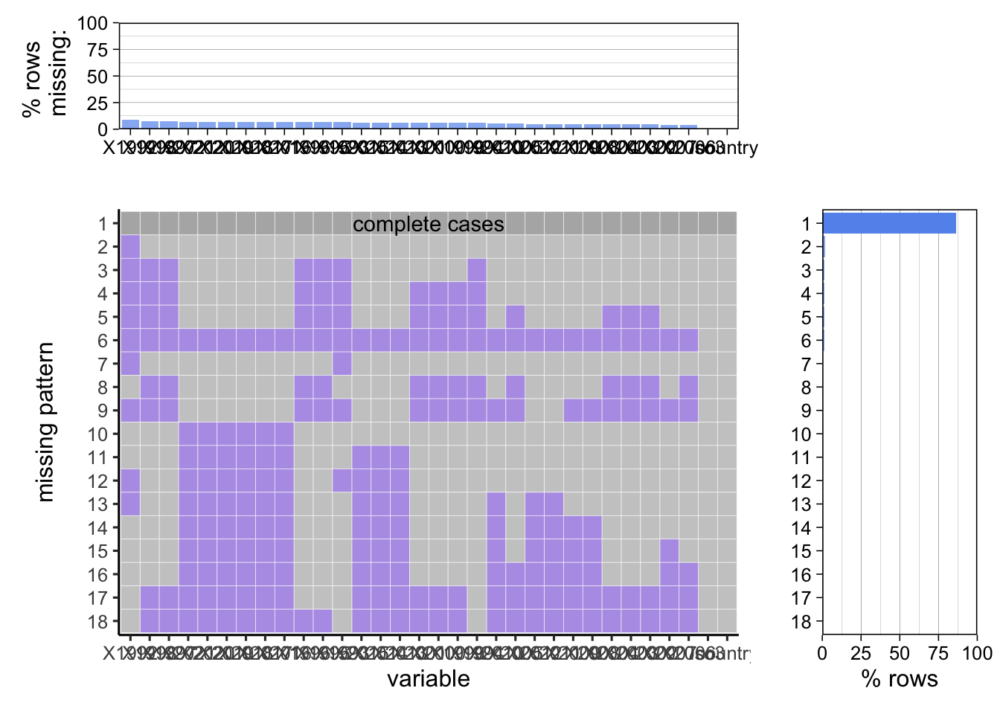
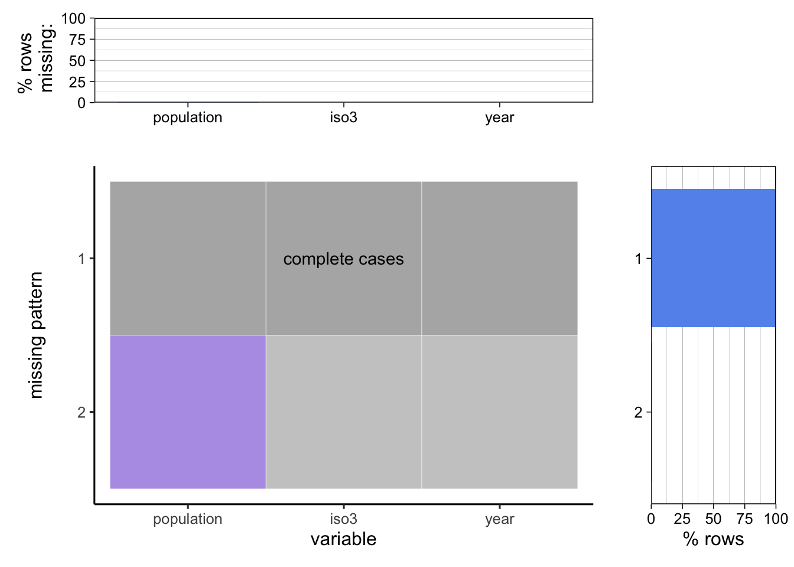

Chapter 3 Data
3.1 Sources
3.1.1 Tuberculosis(TB) notification and outcome dataset
- The source of the dataset is the global tuberculosis report published by World Health Organization(WHO). The dataset provided by countries to WHO and estimates of TB burden generated by WHO for the Global Tuberculosis Report.[Global Tuberculosis Report] (https://www.who.int/teams/global-tuberculosis-programme/data)
- The column explanation(dictionary) is also contained in the link above. The data dictionary file will cover variable names with corresponding definitions. For the categorical variables, the dictionary will also provide the encoding method and meaning of the code.
- Countries provide the data to WHO and we are not sure how exactly those countries collected the data. We conjecture that the data are collected from every hospital by national public health agencies like the Centers for Disease Control and Prevention in the United States. Because the dataset contains the TB data from 1980 to 2021, the collection method may also vary.
- The TB dataset is in CSV(comma-separated value). We can apply read.csv() in R to import the CSV file to the R data frame.
- The TB dataset contains the annual data for the period of 41 years, so we assume that the frequency of updates is once per year. The TB dataset is composed of 198 features of TB data from 217 countries from 1980 to 2021, although there are huge amounts of missing data which will be handled in future analysis.
- The TB dataset contains 595 variables including the budget, community engagement, contacts preventive treatment, estimates, outcomes, etc.
- According to the topics we are interested in, we cannot analyze all variables. There are several potentially related features can be drawn from the dataset.
- c_newinc (Total of new and relapse cases and cases with unknown previous TB treatment history)
- age_group (in years)
- e_inc_tbhiv_num (Estimated incidence of TB cases who are HIV-Positive)
- Etc.
3.1.2 Vaccination dataset
- The source is from the United Nations International Children’s Emergency Fund(UNICEF) which is an agency of the United Nations responsible for providing humanitarian and developmental aid to children worldwide. The UNICEF data will cover the situation of children and women worldwide. [Immunization Data] (https://data.unicef.org/resources/dataset/immunization/)
- According to the UNICEF data and analytics introduction, UNICEF’s Data Team is responsible for the collection, validation, analysis, use, and communication of the most statistically sound. The team upholds the quality, integrity, and organization of these data. [UNICEF Data] (https://data.unicef.org/about-us/)
- The collected data is in Microsoft Excel Spreadsheet format(.xlsx). The data set is updated annually for 168 countries worldwide from 1980 - 2021.
- Same as the CSV file, the .xlsx file can be imported to R and converted to the data frame by the readxl package.
- The structure of the dataset is clear; the spreadsheet covers the BCG vaccination rate for 168 countries in the world in past 41 years. The dataset is not perfect, there exists some missing data for some countries in the period of time. It may cause some problems for our future analysis.
- The number of countries recorded in the spreadsheet from UNICEF is less than the number of countries covered in the WHO dataset. Therefore, during the analysis of the TB and BCG vaccines, some countries will be ignored.
3.1.3 Population dataset
- The source is from the World Bank(WB) which is an international financial institution that provides loans and grants to the government of low- and middle income countries for the purpose of pursing capital projects. Population Data
- The data set is covered all 266 countries in the world and the year covered is from 1980 to 2021.
- The variables are mostly discrete expect for some categorical variables indicate each country.
3.1.4 Number of new HIV infections
- The source is from Institute for Health Metrics and Evaluation, Global Burden of Disease(2019). HIV Infection Data
- The data set collects data from WHO member countries and time span for the data set is 1990-2019.
- There are 266 countries in total, and the variables we focused on are all discrete integer.
3.2 Cleaning / transformation
- Import Library
library(readxl)
library(dplyr)
library(redav)
library(mi)3.2.1 TB notification and outcome dataset
- Import data
tb <- read.csv("Datasets/raw/TB_notifications_2022-10-28.csv")
tb_cleaning <- select(tb, country, iso3, year, new_sp, new_labconf, c_newinc, newrel_hivtest, newrel_hivpos, hivtest, hivtest_pos, new_sp_m014, new_sp_m1524, new_sp_m2534, new_sp_m3544, new_sp_m4554, new_sp_m5564, new_sp_m65, newrel_m014, newrel_m1524, newrel_m2534, newrel_m3544, newrel_m4554, newrel_m5564, newrel_m65, new_sp_f014, new_sp_f1524, new_sp_f2534, new_sp_f3544, new_sp_f4554, new_sp_f5564, new_sp_f65, newrel_f014, newrel_f1524, newrel_f2534, newrel_f3544, newrel_f4554, newrel_f5564, newrel_f65)Variable Selection
Merge Data
tb_cleaning_1 <- tb_cleaning
tb_cleaning_1$new_sp_m014 <- ifelse(tb_cleaning$year <= 2012, tb_cleaning$new_sp_m014, tb_cleaning$newrel_m014)
tb_cleaning_1$new_sp_m1524 <- ifelse(tb_cleaning$year <= 2012, tb_cleaning$new_sp_m1524, tb_cleaning$newrel_m1524)
tb_cleaning_1$new_sp_m2534 <- ifelse(tb_cleaning$year <= 2012, tb_cleaning$new_sp_m2534, tb_cleaning$newrel_m2534)
tb_cleaning_1$new_sp_m3544 <- ifelse(tb_cleaning$year <= 2012, tb_cleaning$new_sp_m3544, tb_cleaning$newrel_m3544)
tb_cleaning_1$new_sp_m4554 <- ifelse(tb_cleaning$year <= 2012, tb_cleaning$new_sp_m4554, tb_cleaning$newrel_m4554)
tb_cleaning_1$new_sp_m5564 <- ifelse(tb_cleaning$year <= 2012, tb_cleaning$new_sp_m5564, tb_cleaning$newrel_m5564)
tb_cleaning_1$new_sp_m65 <- ifelse(tb_cleaning$year <= 2012, tb_cleaning$new_sp_m65, tb_cleaning$newrel_m65)
tb_cleaning_1$new_sp_f014 <- ifelse(tb_cleaning$year <= 2012, tb_cleaning$new_sp_f014, tb_cleaning$newrel_f014)
tb_cleaning_1$new_sp_f1524 <- ifelse(tb_cleaning$year <= 2012, tb_cleaning$new_sp_f1524, tb_cleaning$newrel_f1524)
tb_cleaning_1$new_sp_f2534 <- ifelse(tb_cleaning$year <= 2012, tb_cleaning$new_sp_f2534, tb_cleaning$newrel_m2534)
tb_cleaning_1$new_sp_f3544 <- ifelse(tb_cleaning$year <= 2012, tb_cleaning$new_sp_f3544, tb_cleaning$newrel_m3544)
tb_cleaning_1$new_sp_f4554 <- ifelse(tb_cleaning$year <= 2012, tb_cleaning$new_sp_f4554, tb_cleaning$newrel_f4554)
tb_cleaning_1$new_sp_f5564 <- ifelse(tb_cleaning$year <= 2012, tb_cleaning$new_sp_f5564, tb_cleaning$newrel_f5564)
tb_cleaning_1$new_sp_f65 <- ifelse(tb_cleaning$year <= 2012, tb_cleaning$new_sp_f65, tb_cleaning$newrel_f65)
tb_cleaning_1$hivtest <- ifelse(tb_cleaning$year <= 2014, tb_cleaning$hivtest, tb_cleaning$newrel_hivtest)
tb_cleaning_1$hivtest_pos <- ifelse(tb_cleaning$year <= 2014, tb_cleaning$hivtest_pos, tb_cleaning$newrel_hivpos)- Remove missing data
tb_cleaning_2 <- select(tb_cleaning_1, country, iso3, year, new_sp, new_labconf, c_newinc, hivtest, hivtest_pos, new_sp_m014, new_sp_m1524, new_sp_m2534, new_sp_m3544, new_sp_m4554, new_sp_m5564, new_sp_m65, new_sp_f014, new_sp_f1524, new_sp_f2534, new_sp_f3544, new_sp_f4554, new_sp_f5564, new_sp_f65)
tb_cleaning_3 <- subset(tb_cleaning_2, is.na(c_newinc) == FALSE)
head(tb_cleaning_3)## country iso3 year new_sp new_labconf c_newinc hivtest hivtest_pos
## Length:8380 Length:8380 Min. :1980 Min. : 0 Min. : 0 Min. : 0.0 Min. : 0.0 Min. : 0
## Class :character Class :character 1st Qu.:1990 1st Qu.: 99 1st Qu.: 117 1st Qu.: 223.8 1st Qu.: 63.0 1st Qu.: 1
## Mode :character Mode :character Median :2001 Median : 1056 Median : 1137 Median : 2157.5 Median : 839.5 Median : 38
## Mean :2001 Mean : 9885 Mean : 12950 Mean : 22435.2 Mean : 14641.8 Mean : 2246
## 3rd Qu.:2011 3rd Qu.: 5014 3rd Qu.: 5326 3rd Qu.: 9704.0 3rd Qu.: 5801.8 3rd Qu.: 539
## Max. :2021 Max. :642321 Max. :908925 Max. :2162323.0 Max. :1868972.0 Max. :211128
## NA's :4478 NA's :4301 NA's :5068 NA's :5101
## new_sp_m014 new_sp_m1524 new_sp_m2534 new_sp_m3544 new_sp_m4554 new_sp_m5564 new_sp_m65 new_sp_f014
## Min. : 0.0 Min. : 0 Min. : 0.0 Min. : 0 Min. : 0 Min. : 0 Min. : 0.0 Min. : 0.0
## 1st Qu.: 1.0 1st Qu.: 10 1st Qu.: 16.0 1st Qu.: 16 1st Qu.: 14 1st Qu.: 11 1st Qu.: 10.0 1st Qu.: 1.0
## Median : 11.0 Median : 108 Median : 180.0 Median : 153 Median : 124 Median : 79 Median : 73.0 Median : 13.0
## Mean : 436.6 Mean : 1591 Mean : 2090.9 Mean : 1999 Mean : 1825 Mean : 1450 Mean : 1274.3 Mean : 439.4
## 3rd Qu.: 83.0 3rd Qu.: 602 3rd Qu.: 880.8 3rd Qu.: 722 3rd Qu.: 573 3rd Qu.: 386 3rd Qu.: 362.8 3rd Qu.: 93.0
## Max. :73692.0 Max. :234693 Max. :233598.0 Max. :221347 Max. :224486 Max. :201253 Max. :156697.0 Max. :71882.0
## NA's :3433 NA's :3433 NA's :3432 NA's :3418 NA's :3413 NA's :3419 NA's :3430 NA's :3435
## new_sp_f1524 new_sp_f2534 new_sp_f3544 new_sp_f4554 new_sp_f5564 new_sp_f65
## Min. : 0.0 Min. : 0 Min. : 0.0 Min. : 0.0 Min. : 0.0 Min. : 0.00
## 1st Qu.: 8.0 1st Qu.: 12 1st Qu.: 8.0 1st Qu.: 6.0 1st Qu.: 4.0 1st Qu.: 5.75
## Median : 85.0 Median : 117 Median : 83.0 Median : 48.0 Median : 33.0 Median : 41.00
## Mean : 1340.2 Mean : 1776 Mean : 1564.0 Mean : 811.9 Mean : 620.9 Mean : 582.09
## 3rd Qu.: 484.5 3rd Qu.: 681 3rd Qu.: 512.5 3rd Qu.: 273.0 3rd Qu.: 200.0 3rd Qu.: 208.00
## Max. :234815.0 Max. :233598 Max. :221347.0 Max. :90181.0 Max. :73693.0 Max. :60830.00
## NA's :3446 NA's :3437 NA's :3437 NA's :3433 NA's :3444 NA's :34443.2.2 Vaccination dataset
- Read Data
vaccine <- read_excel(path = "../vaccine.xlsx")
summary(vaccine)## unicef_region iso3 country vaccine 2021 2020 2019 2018 2017
## Length:168 Length:168 Length:168 Length:168 Min. : 0.00 Min. : 0.00 Min. : 0.0 Min. : 0.00 Min. : 0.00
## Class :character Class :character Class :character Class :character 1st Qu.:81.00 1st Qu.:84.00 1st Qu.:86.0 1st Qu.:90.00 1st Qu.:89.00
## Mode :character Mode :character Mode :character Mode :character Median :93.00 Median :93.00 Median :95.0 Median :95.00 Median :95.00
## Mean :86.43 Mean :87.77 Mean :89.5 Mean :90.27 Mean :90.75
## 3rd Qu.:98.00 3rd Qu.:98.00 3rd Qu.:98.0 3rd Qu.:98.00 3rd Qu.:99.00
## Max. :99.00 Max. :99.00 Max. :99.0 Max. :99.00 Max. :99.00
## NA's :11 NA's :11 NA's :11 NA's :11 NA's :11
## 2016 2015 2014 2013 2012 2011 2010 2009 2008 2007
## Min. :18.00 Min. :24.00 Min. :26.00 Min. :27.00 Min. :24.00 Min. :23.00 Min. :23.00 Min. :21.00 Min. :23.00 Min. :23.0
## 1st Qu.:88.00 1st Qu.:88.25 1st Qu.:90.00 1st Qu.:91.25 1st Qu.:91.75 1st Qu.:90.00 1st Qu.:90.00 1st Qu.:90.00 1st Qu.:89.75 1st Qu.:89.0
## Median :96.00 Median :96.00 Median :96.00 Median :96.00 Median :96.00 Median :97.00 Median :96.00 Median :96.00 Median :96.00 Median :95.0
## Mean :90.63 Mean :90.35 Mean :91.34 Mean :91.54 Mean :92.21 Mean :91.66 Mean :91.74 Mean :91.33 Mean :91.43 Mean :90.7
## 3rd Qu.:99.00 3rd Qu.:99.00 3rd Qu.:99.00 3rd Qu.:99.00 3rd Qu.:99.00 3rd Qu.:99.00 3rd Qu.:99.00 3rd Qu.:99.00 3rd Qu.:99.00 3rd Qu.:99.0
## Max. :99.00 Max. :99.00 Max. :99.00 Max. :99.00 Max. :99.00 Max. :99.00 Max. :99.00 Max. :99.00 Max. :99.00 Max. :99.0
## NA's :11 NA's :10 NA's :10 NA's :10 NA's :8 NA's :8 NA's :9 NA's :8 NA's :8 NA's :7
## 2006 2005 2004 2003 2002 2001 2000 1999 1998 1997
## Min. :21.0 Min. :20.00 Min. :18.00 Min. :17.00 Min. :16.00 Min. :16.00 Min. :16.00 Min. :16.00 Min. :16.00 Min. :15.00
## 1st Qu.:88.0 1st Qu.:86.50 1st Qu.:85.00 1st Qu.:83.00 1st Qu.:82.00 1st Qu.:82.00 1st Qu.:82.00 1st Qu.:82.00 1st Qu.:81.00 1st Qu.:80.75
## Median :96.0 Median :95.00 Median :95.00 Median :93.00 Median :92.00 Median :93.00 Median :93.00 Median :93.00 Median :92.00 Median :94.00
## Mean :90.4 Mean :89.42 Mean :88.76 Mean :88.22 Mean :87.36 Mean :87.47 Mean :87.41 Mean :87.01 Mean :86.29 Mean :85.96
## 3rd Qu.:99.0 3rd Qu.:98.00 3rd Qu.:99.00 3rd Qu.:98.00 3rd Qu.:98.00 3rd Qu.:98.00 3rd Qu.:98.00 3rd Qu.:98.00 3rd Qu.:98.00 3rd Qu.:98.00
## Max. :99.0 Max. :99.00 Max. :99.00 Max. :99.00 Max. :99.00 Max. :99.00 Max. :99.00 Max. :99.00 Max. :99.00 Max. :99.00
## NA's :7 NA's :9 NA's :8 NA's :8 NA's :8 NA's :10 NA's :10 NA's :10 NA's :12 NA's :12
## 1996 1995 1994 1993 1992 1991 1990 1989 1988 1987
## Min. :14.00 Min. :14.00 Min. :13.00 Min. :13.00 Min. :13.00 Min. :12.00 Min. :12.00 Min. : 8.00 Min. :14.00 Min. :14.00
## 1st Qu.:80.00 1st Qu.:81.00 1st Qu.:80.25 1st Qu.:79.00 1st Qu.:79.00 1st Qu.:76.00 1st Qu.:77.00 1st Qu.:74.25 1st Qu.:66.00 1st Qu.:60.50
## Median :93.00 Median :93.00 Median :93.00 Median :91.00 Median :90.00 Median :90.00 Median :91.00 Median :89.50 Median :86.00 Median :80.00
## Mean :86.39 Mean :86.57 Mean :85.25 Mean :84.04 Mean :83.54 Mean :83.04 Mean :84.13 Mean :81.07 Mean :77.67 Mean :73.69
## 3rd Qu.:98.00 3rd Qu.:97.00 3rd Qu.:97.00 3rd Qu.:96.00 3rd Qu.:97.00 3rd Qu.:96.00 3rd Qu.:96.75 3rd Qu.:96.00 3rd Qu.:95.00 3rd Qu.:93.00
## Max. :99.00 Max. :99.00 Max. :99.00 Max. :99.00 Max. :99.00 Max. :99.00 Max. :99.00 Max. :99.00 Max. :99.00 Max. :99.00
## NA's :11 NA's :11 NA's :10 NA's :11 NA's :15 NA's :33 NA's :34 NA's :34 NA's :35 NA's :37
## 1986 1985 1984 1983 1982 1981 1980
## Min. : 4.00 Min. : 2.00 Min. : 2.00 Min. : 2.00 Min. : 1.00 Min. : 1.00 Min. : 2.00
## 1st Qu.:53.00 1st Qu.:47.00 1st Qu.:41.75 1st Qu.:40.50 1st Qu.:37.25 1st Qu.:32.00 1st Qu.:33.25
## Median :76.00 Median :74.00 Median :66.00 Median :65.00 Median :61.50 Median :58.50 Median :61.50
## Mean :69.52 Mean :65.55 Mean :60.77 Mean :60.53 Mean :58.59 Mean :55.74 Mean :58.19
## 3rd Qu.:92.00 3rd Qu.:89.00 3rd Qu.:84.25 3rd Qu.:83.00 3rd Qu.:83.00 3rd Qu.:81.00 3rd Qu.:85.00
## Max. :99.00 Max. :99.00 Max. :99.00 Max. :99.00 Max. :99.00 Max. :99.00 Max. :99.00
## NA's :37 NA's :39 NA's :44 NA's :52 NA's :58 NA's :64 NA's :90vaccine_cleaned <- (vaccine %>% select(0:34))## iso3 country 2021 2020 2019 2018 2017 2016 2015
## Length:168 Length:168 Min. : 0.00 Min. : 0.00 Min. : 0.0 Min. : 0.00 Min. : 0.00 Min. :18.00 Min. :24.00
## Class :character Class :character 1st Qu.:81.00 1st Qu.:84.00 1st Qu.:86.0 1st Qu.:90.00 1st Qu.:89.00 1st Qu.:88.00 1st Qu.:88.25
## Mode :character Mode :character Median :93.00 Median :93.00 Median :95.0 Median :95.00 Median :95.00 Median :96.00 Median :96.00
## Mean :86.43 Mean :87.77 Mean :89.5 Mean :90.27 Mean :90.75 Mean :90.63 Mean :90.35
## 3rd Qu.:98.00 3rd Qu.:98.00 3rd Qu.:98.0 3rd Qu.:98.00 3rd Qu.:99.00 3rd Qu.:99.00 3rd Qu.:99.00
## Max. :99.00 Max. :99.00 Max. :99.0 Max. :99.00 Max. :99.00 Max. :99.00 Max. :99.00
## NA's :11 NA's :11 NA's :11 NA's :11 NA's :11 NA's :11 NA's :10
## 2014 2013 2012 2011 2010 2009 2008 2007 2006 2005
## Min. :26.00 Min. :27.00 Min. :24.00 Min. :23.00 Min. :23.00 Min. :21.00 Min. :23.00 Min. :23.0 Min. :21.0 Min. :20.00
## 1st Qu.:90.00 1st Qu.:91.25 1st Qu.:91.75 1st Qu.:90.00 1st Qu.:90.00 1st Qu.:90.00 1st Qu.:89.75 1st Qu.:89.0 1st Qu.:88.0 1st Qu.:86.50
## Median :96.00 Median :96.00 Median :96.00 Median :97.00 Median :96.00 Median :96.00 Median :96.00 Median :95.0 Median :96.0 Median :95.00
## Mean :91.34 Mean :91.54 Mean :92.21 Mean :91.66 Mean :91.74 Mean :91.33 Mean :91.43 Mean :90.7 Mean :90.4 Mean :89.42
## 3rd Qu.:99.00 3rd Qu.:99.00 3rd Qu.:99.00 3rd Qu.:99.00 3rd Qu.:99.00 3rd Qu.:99.00 3rd Qu.:99.00 3rd Qu.:99.0 3rd Qu.:99.0 3rd Qu.:98.00
## Max. :99.00 Max. :99.00 Max. :99.00 Max. :99.00 Max. :99.00 Max. :99.00 Max. :99.00 Max. :99.0 Max. :99.0 Max. :99.00
## NA's :10 NA's :10 NA's :8 NA's :8 NA's :9 NA's :8 NA's :8 NA's :7 NA's :7 NA's :9
## 2004 2003 2002 2001 2000 1999 1998 1997 1996 1995
## Min. :18.00 Min. :17.00 Min. :16.00 Min. :16.00 Min. :16.00 Min. :16.00 Min. :16.00 Min. :15.00 Min. :14.00 Min. :14.00
## 1st Qu.:85.00 1st Qu.:83.00 1st Qu.:82.00 1st Qu.:82.00 1st Qu.:82.00 1st Qu.:82.00 1st Qu.:81.00 1st Qu.:80.75 1st Qu.:80.00 1st Qu.:81.00
## Median :95.00 Median :93.00 Median :92.00 Median :93.00 Median :93.00 Median :93.00 Median :92.00 Median :94.00 Median :93.00 Median :93.00
## Mean :88.76 Mean :88.22 Mean :87.36 Mean :87.47 Mean :87.41 Mean :87.01 Mean :86.29 Mean :85.96 Mean :86.39 Mean :86.57
## 3rd Qu.:99.00 3rd Qu.:98.00 3rd Qu.:98.00 3rd Qu.:98.00 3rd Qu.:98.00 3rd Qu.:98.00 3rd Qu.:98.00 3rd Qu.:98.00 3rd Qu.:98.00 3rd Qu.:97.00
## Max. :99.00 Max. :99.00 Max. :99.00 Max. :99.00 Max. :99.00 Max. :99.00 Max. :99.00 Max. :99.00 Max. :99.00 Max. :99.00
## NA's :8 NA's :8 NA's :8 NA's :10 NA's :10 NA's :10 NA's :12 NA's :12 NA's :11 NA's :11
## 1994 1993 1992
## Min. :13.00 Min. :13.00 Min. :13.00
## 1st Qu.:80.25 1st Qu.:79.00 1st Qu.:79.00
## Median :93.00 Median :91.00 Median :90.00
## Mean :85.25 Mean :84.04 Mean :83.54
## 3rd Qu.:97.00 3rd Qu.:96.00 3rd Qu.:97.00
## Max. :99.00 Max. :99.00 Max. :99.00
## NA's :10 NA's :11 NA's :15vaccine_pivoted <- vaccine_cleaned %>%
pivot_longer(cols = -c('iso3','country'),
names_to = 'year',
values_to = 'vaccination_rate') %>%
mutate(year = substr(year, 1, 5))
head(vaccine_pivoted)## # A tibble: 6 × 4
## iso3 country year vaccination_rate
## <chr> <chr> <chr> <dbl>
## 1 AFG Afghanistan 2021 84
## 2 AFG Afghanistan 2020 87
## 3 AFG Afghanistan 2019 86
## 4 AFG Afghanistan 2018 89
## 5 AFG Afghanistan 2017 84
## 6 AFG Afghanistan 2016 783.2.3 Population
- Read data
df_population <- read.csv("../Datasets/population.csv")
df_population_1 <- df_population %>%
select(1:2, 25:66) %>%
pivot_longer(cols = -c('Country.Name', 'Country.Code'),
names_to = 'year',
values_to = 'population') %>%
mutate(year = substr(year, 2, 5)) %>%
rename(country = Country.Name,
iso3 = Country.Code)
head(df_population_1)## # A tibble: 6 × 4
## country iso3 year population
## <chr> <chr> <chr> <dbl>
## 1 Aruba ABW 1980 60097
## 2 Aruba ABW 1981 60561
## 3 Aruba ABW 1982 61341
## 4 Aruba ABW 1983 62213
## 5 Aruba ABW 1984 62826
## 6 Aruba ABW 1985 63024- Merged with TB data set
df_tb_cleaning <- merge(df_population_1, tb_cleaning_3, by = c('iso3', 'year'))
df_continent <- read.csv("Datasets/raw/continents2.csv")
df_continent_1 <- df_continent %>%
select(alpha.3, region) %>%
rename(iso3 = alpha.3, continent = region)
df_tb_cleaning_1 <- merge(df_continent_1, df_tb_cleaning, by = 'iso3')
head(df_tb_cleaning_1)## iso3 continent year country.x population country.y new_sp new_labconf c_newinc hivtest hivtest_pos new_sp_m014 new_sp_m1524 new_sp_m2534 new_sp_m3544
## 1 ABW Americas 2012 Aruba 102565 Aruba 6 6 28 1 1 NA NA NA 2
## 2 ABW Americas 2013 Aruba 103165 Aruba NA 2 11 NA NA NA NA NA 2
## 3 ABW Americas 2010 Aruba 101665 Aruba 4 6 6 NA NA NA NA NA NA
## 4 ABW Americas 2011 Aruba 102050 Aruba 7 7 8 NA NA NA NA NA NA
## 5 ABW Americas 2017 Aruba 105361 Aruba NA 2 8 NA 0 0 0 0 1
## 6 ABW Americas 2018 Aruba 105846 Aruba NA 5 5 NA NA 0 0 0 0
## new_sp_m4554 new_sp_m5564 new_sp_m65 new_sp_f014 new_sp_f1524 new_sp_f2534 new_sp_f3544 new_sp_f4554 new_sp_f5564 new_sp_f65
## 1 3 NA NA 1 4 NA 2 1 NA 1
## 2 1 2 NA NA 1 NA 2 1 2 2
## 3 NA NA NA NA NA NA NA NA NA NA
## 4 4 NA 1 NA NA 1 NA NA NA 1
## 5 1 0 1 0 1 0 1 2 0 1
## 6 2 2 0 0 0 0 0 0 1 03.2.4 HIV infections
- Read Data
df_hiv <- read.csv("../Datasets/number-of-people-living-with-hiv.csv")
df_hiv_1 <- df_hiv %>%
select(2:4) %>%
rename(iso3 = Code,
year = Year,
hiv_num = Prevalence...HIV.AIDS...Sex..Both...Age..All.Ages..Number.)
df_tb_cleaning_2 <- merge(df_tb_cleaning_1, df_hiv_1, by = c('iso3', 'year')) %>%
mutate(tb_infection_rate = c_newinc/population,
hiv_tb_infection_rate = hivtest_pos/hiv_num)## iso3 year continent country.x population country.y new_sp new_labconf c_newinc hivtest hivtest_pos new_sp_m014 new_sp_m1524 new_sp_m2534 new_sp_m3544
## 1 AFG 1990 Asia Afghanistan 12412311 Afghanistan NA NA 4332 NA NA NA NA NA NA
## 2 AFG 1991 Asia Afghanistan 13299016 Afghanistan NA NA 23067 NA NA NA NA NA NA
## 3 AFG 1997 Asia Afghanistan 19357126 Afghanistan 618 NA 1290 NA NA 0 10 6 3
## 4 AFG 1998 Asia Afghanistan 19737770 Afghanistan 1833 NA 3084 NA NA 30 129 128 90
## 5 AFG 1999 Asia Afghanistan 20170847 Afghanistan 1669 NA 3314 NA NA 8 55 55 47
## 6 AFG 2000 Asia Afghanistan 20779957 Afghanistan 2892 NA 7107 NA NA 52 228 183 149
## new_sp_m4554 new_sp_m5564 new_sp_m65 new_sp_f014 new_sp_f1524 new_sp_f2534 new_sp_f3544 new_sp_f4554 new_sp_f5564 new_sp_f65 hiv_num tb_infection_rate
## 1 NA NA NA NA NA NA NA NA NA NA 418 3.490083e-04
## 2 NA NA NA NA NA NA NA NA NA NA 495 1.734489e-03
## 3 5 2 0 5 38 36 14 8 0 1 959 6.664212e-05
## 4 89 64 41 45 350 419 194 118 61 20 998 1.562487e-04
## 5 34 21 8 25 139 160 110 50 25 8 1024 1.642965e-04
## 6 129 94 80 93 414 565 339 205 99 36 1062 3.420123e-04
## hiv_tb_infection_rate
## 1 NA
## 2 NA
## 3 NA
## 4 NA
## 5 NA
## 6 NA3.3 Missing value analysis
3.3.1 TB notification and outcome dataset
- Before Cleaning
colSums(is.na(tb_cleaning))## country iso3 year new_sp new_labconf c_newinc newrel_hivtest newrel_hivpos hivtest hivtest_pos
## 0 0 0 5020 4843 542 7615 7619 6876 6905
## new_sp_m014 new_sp_m1524 new_sp_m2534 new_sp_m3544 new_sp_m4554 new_sp_m5564 new_sp_m65 newrel_m014 newrel_m1524 newrel_m2534
## 5754 5718 5721 5708 5704 5709 5718 7143 7179 7175
## newrel_m3544 newrel_m4554 newrel_m5564 newrel_m65 new_sp_f014 new_sp_f1524 new_sp_f2534 new_sp_f3544 new_sp_f4554 new_sp_f5564
## 7174 7173 7173 7176 5752 5732 5726 5727 5722 5731
## new_sp_f65 newrel_f014 newrel_f1524 newrel_f2534 newrel_f3544 newrel_f4554 newrel_f5564 newrel_f65
## 5729 7147 7178 7174 7174 7175 7177 7179plot_missing(tb_cleaning)
- After Cleaning
colSums(is.na(tb_cleaning_3))## country iso3 year new_sp new_labconf c_newinc hivtest hivtest_pos new_sp_m014 new_sp_m1524 new_sp_m2534 new_sp_m3544
## 0 0 0 4478 4301 0 5068 5101 3433 3433 3432 3418
## new_sp_m4554 new_sp_m5564 new_sp_m65 new_sp_f014 new_sp_f1524 new_sp_f2534 new_sp_f3544 new_sp_f4554 new_sp_f5564 new_sp_f65
## 3413 3419 3430 3435 3446 3437 3437 3433 3444 3444plot_missing(tb_cleaning_3)
3.3.2 Vaccination dataset
- Missing Pattern Before Drop
colSums(is.na(vaccine))## unicef_region iso3 country vaccine 2021 2020 2019 2018 2017 2016 2015
## 0 0 0 0 11 11 11 11 11 11 10
## 2014 2013 2012 2011 2010 2009 2008 2007 2006 2005 2004
## 10 10 8 8 9 8 8 7 7 9 8
## 2003 2002 2001 2000 1999 1998 1997 1996 1995 1994 1993
## 8 8 10 10 10 12 12 11 11 10 11
## 1992 1991 1990 1989 1988 1987 1986 1985 1984 1983 1982
## 15 33 34 34 35 37 37 39 44 52 58
## 1981 1980
## 64 90plot_missing(vaccine) * Missing Pattern After Drop
colSums(is.na(vaccine_cleaned))## iso3 country 2021 2020 2019 2018 2017 2016 2015 2014 2013 2012 2011 2010 2009 2008 2007 2006 2005 2004
## 0 0 11 11 11 11 11 11 10 10 10 8 8 9 8 8 7 7 9 8
## 2003 2002 2001 2000 1999 1998 1997 1996 1995 1994 1993 1992
## 8 8 10 10 10 12 12 11 11 10 11 15plot_missing(vaccine) ### Population
colSums(is.na(df_population))## Country.Name Country.Code Indicator.Name Indicator.Code X1960 X1961 X1962 X1963 X1964 X1965
## 0 0 0 0 2 2 2 2 2 2
## X1966 X1967 X1968 X1969 X1970 X1971 X1972 X1973 X1974 X1975
## 2 2 2 2 2 2 2 2 2 2
## X1976 X1977 X1978 X1979 X1980 X1981 X1982 X1983 X1984 X1985
## 2 2 2 2 2 2 2 2 2 2
## X1986 X1987 X1988 X1989 X1990 X1991 X1992 X1993 X1994 X1995
## 2 2 2 2 1 1 2 2 2 1
## X1996 X1997 X1998 X1999 X2000 X2001 X2002 X2003 X2004 X2005
## 1 1 1 1 1 1 1 1 1 1
## X2006 X2007 X2008 X2009 X2010 X2011 X2012 X2013 X2014 X2015
## 1 1 1 1 1 1 2 2 2 2
## X2016 X2017 X2018 X2019 X2020 X2021 X
## 2 2 2 2 2 2 266plot_missing(df_population)